How does speech work?
How can we write down speech?
How do we describe consonants?
How do we describe vowels?
Flapping bits of meat inside your head while blowing out air
This creates vibrations in the air you’re expelling
The ear picks these up, and inteprets them as speech.
This process is studied in Phonetics
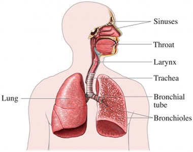

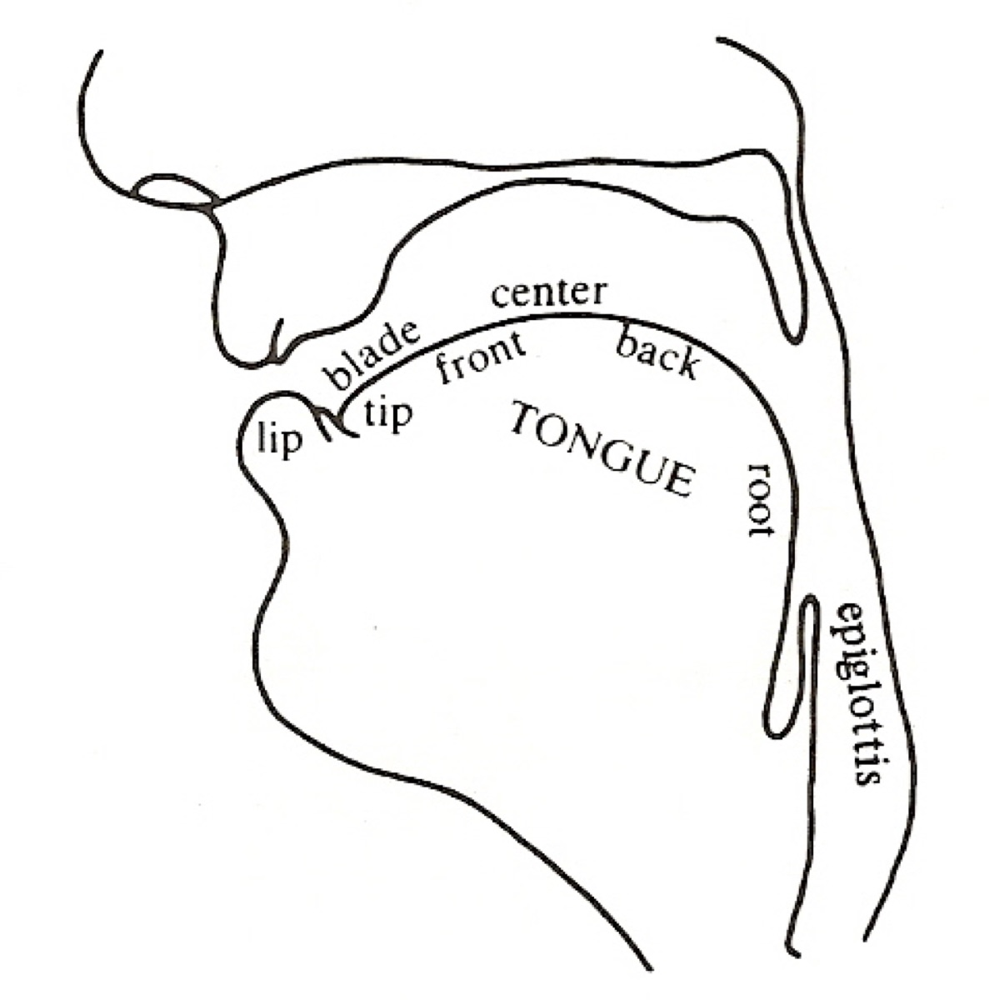

The North Wind and the Sun were disputing which was the stronger, when a traveler came along wrapped in a warm cloak.
It’s a series of fluid and overlapping gestures
It’s amazingly complex
… and it’s nothing like we think it is
First, we break speech into ‘segments’ or ‘phones’
Then, we figure out how to describe those phones and their properties
This lets us transcribe what was said, rather than what words were said
But first you need to realize that…

Every minute of every day
“They thoroughly and roughly wrought the boughs in the borough, through and through”
C doesn’t exist
The ‘ee’ in ‘pee’ is silent
The ‘e’
TH is neither a t nor an h, and represents two different sounds
… and if you start thinking about letters, you’re going to start struggling
For this class, consider your writing system with the same skepticism you would normally reserve for a guy with a broken bottle walking towards you in a dark alley.
Our writing system is lying to us
Many languages don’t have writing systems
… and we still need to write down what was said in them

(Nah, it’s cool, we’ve got the IPA!)
A system for transcribing what was said, that’s based on describing individual phones
We’ll discuss a reduced set of the IPA focusing on the English language in this class

A system for transcribing what was said, that’s based on describing individual phones
The IPA should be able to transcribe speech in any human language or dialect
You throw away the writing system, and write down the sequence of sounds being produced
“Black Lives Matter”
In Will’s dialect: /blæk lajvz mæɾəɹ/
<img class="r-stretch" src="phonmedia/ipa_chart.jpg">ipachart.com is bad and should feel bad
If you’re just typing IPA, you can use this tool
Use the quick reference guide too!
Consonants: Constrict, obstruct, or divert air in the vocal tract when being produced
Vowels: Shape the (unobstructed) vocal tract to change the sound emitted
| ### Three steps to describing Consonants |
| * We need to know three things: |
| * Place: Where is the sound made? |
| * Manner: What are we doing there? |
| * Voicing: Are we making voicing? |
| ### Place |
 |
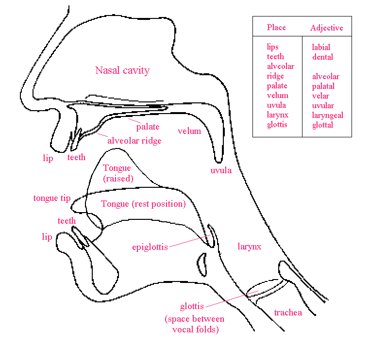
Bilabial: As in “boy”
Labiodental: As in “Vote”
Interdental: As in “Those”
Alveolar: As in “Totes!”
Postalveolar: As in “Judge”
Velar: As in “Clamking
Glottal: As in “Uh-oh!”
Bilabial: As in “Batman isn’t me!”
Labiodental: As in “Vowels aren’t foul!”
Alveolar: As in “Totes lit!”
Postalveolar: As in “Judgy Cheetahs”
Velar: As in “Go call young carpenters”
Bilabial: As in “Batman isn’t me!”
Labiodental: As in “Vowels aren’t foul!”
Alveolar: As in “Totes lit!”
Postalveolar: As in “Judgy Cheetahs”
‘Uvular’ sounds are made involving the uvula
As Cardi B says, ‘that little dangly thang that swang in the back of my throat’
The French “r” sound in ‘rouge’
‘Retroflex’ sounds curl the tongue up and back
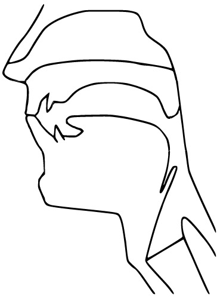
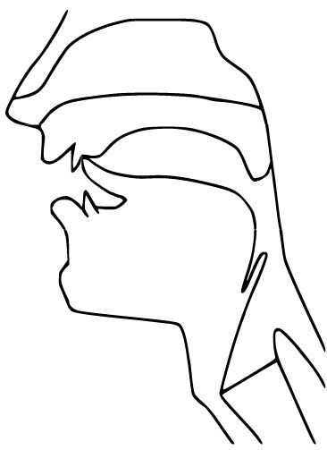

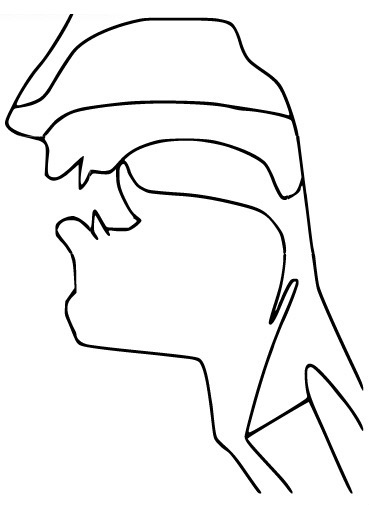
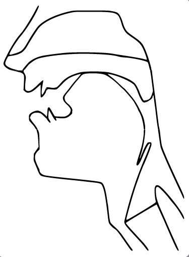
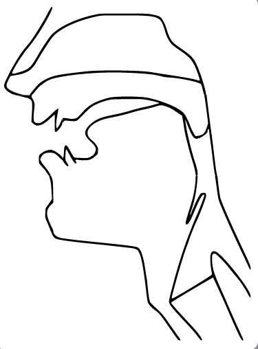
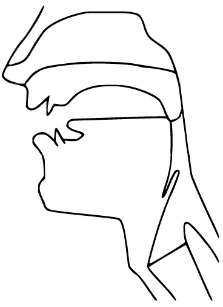
“So what are you doing with the articulators?”
Stops: Stop the airflow (also called ‘plosives’)
Taps: Throw your tongue against the roof of your mouth
Fricatives: Constrict the airflow to make sounds
Nasals: Channel the air out the nose
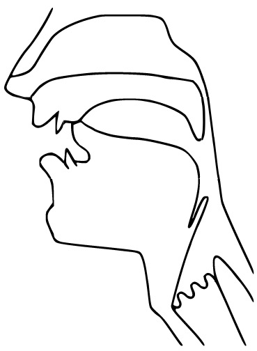
Approximants: Bring the tongue toward the place
Laterals: Channel air around the tongue

Stops: Stop the airflow
Fricatives: Constrict the airflow to make sounds
Nasals: Channel the air out the nose
Approximants: Bring the tongue toward the place
Laterals: Channel air around the tongue
A)
Fricatives: Constrict the airflow to make sounds
Nasals: Channel the air out the nose
Approximants: Bring the tongue toward the place
Laterals: Channel air around the tongue
Stops: Stop the airflow
Fricatives: Constrict the airflow to make sounds
Nasals: Channel the air out the nose
Approximants: Bring the tongue toward the place
Laterals: Channel air around the tongue
| ### The initial sounds in “Feline Show” are… |
| A) Stops: Stop the airflow |
| B) |
| C) Nasals: Channel the air out the nose |
| D) Approximants: Bring the tongue toward the place |
| E) Laterals: Channel air around the tongue |
Content Warning: Things are about to get weird.

All Voiced
All Voiceless
Voiceless, Voiced, Voiceless
Voiced, Voiceless, Voiced
None of the above
All Voiced
All Voiceless
Voiced, Voiceless, Voiced
None of the above
We need to know three things:
Place: Where is the sound made?
Manner: What are we doing there?
Voicing: Are we making voicing?
/m/ - Voiced Bilabial Nasal
/t/ - Voiceless Alveolar Stop
/g/ - Voiced Velar Stop
/f/ - Voiceless Labiodental Fricative
If you combine a fricative and a stop, you get an affricate
Judge (d͡ʒʌd͡ʒ)
Cheese (t͡ʃiz)
Cats (kæts)
Once we’ve organized sounds by place, manner, and voicing, we have…
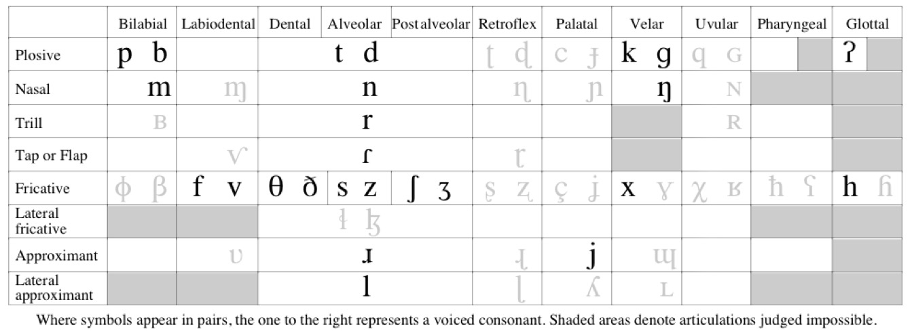
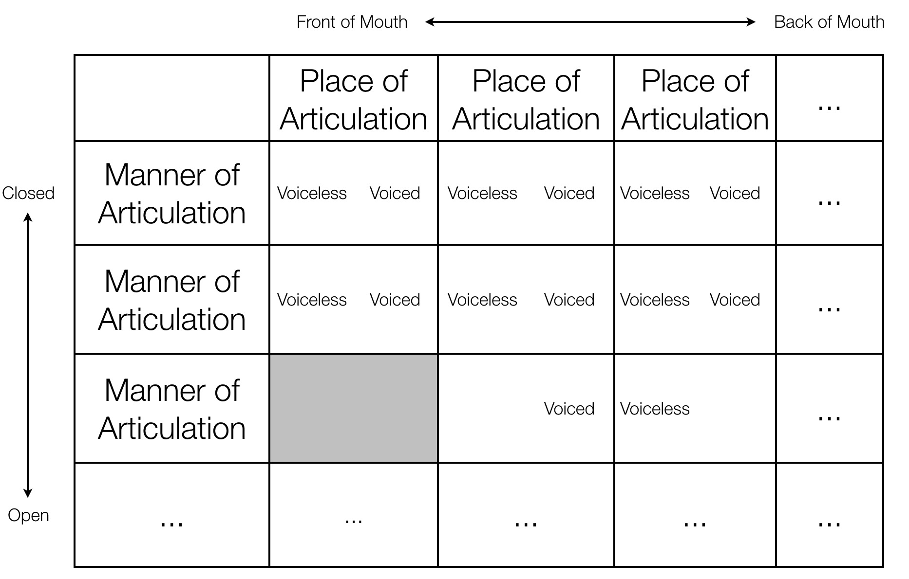

Ask Sammy the Interactive Sagittal Section!
A vowel is voicing passing through (and resonating in) an unobstructed vocal tract!
If we change the position of the tongue, we change the resonances

They’re always* voiced
They can (and do) occur on their own. I.
We describe vowels using different characteristics
5
5, sometimes 6
12
17
21
5
5, sometimes 6
12
21


/i/ - beet, see, seen, sear, seal
/ɪ/ - bit, sit, tin, sill
/ɛ/ - bet, set, sent, fair, sell
/æ/ - bat, sat, pant, pal
/ʌ/ - but, sun, pun, lull (ə in sofa, amount)
/əɹ/ - bird, purr, earl, butter, clamor (this is often broken into two vowels!)
/ɑ/ - bot, saw, star, paul, pawn, (cot*)
/ɔ/ - corn /kɔɹn/, boy /bɔj/ (caught*)
/ʊ/ - book, hood, puss
/u/ - boot, who’d, loose, lure, loon
Yes, they’re two different vowels
No, they’re the same vowel
They sound the same, but we use /ə/ in unstressed positions in words
If there’s just one vowel in the word, and it sounds like ‘uh’, it’s /ʌ/
This is the same difference between /ɜ˞/ and /əɹ/ (although for this class, you can write /əɹ/ for both)
More details at this link
For vowels, we talk about three additional dimensions
1- Where is the tongue in terms of height?
2- Where is the tongue in terms of horizontal space?
3- Are your lips rounded or not?

| ### The IPA Vowel Chart |
| 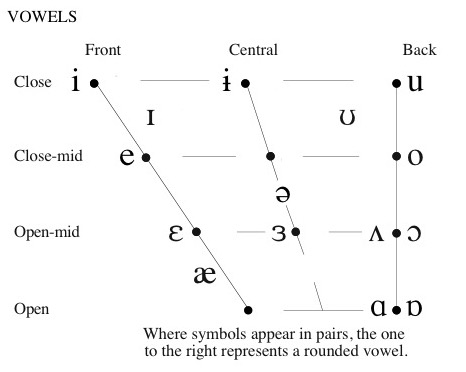 |

 |
Vowels where the tongue moves through the mouth
Start at one vowel, move to another vowel
Things like “boy” (/ɔj/), “buy” (/aj/), “bay” (/ej/), “boat” (/ow/), “cow” (/aw/)
Others are monophthongs
/ɔj/ - boy, soy, toy, join, oil, Roy
/aj/ - buy, right, try, sigh, die, fire
/ej/ - play, bay, may, ray, lay, trail
/ow/ - boat, oat, wrote, pope, toll
/aw/ - how, now, brown, cow, prow, louse
12 Monophthongs
5 Diphthongs
And we describe these vowels in terms of high-to-low, front-to-back, and rounded or not.
Speech is crazy complicated
The English writing system is a large lagoon of lies
We describe consonants by talking about place, manner, and voicing
The English writing system is a festival of falsehoods
We describe vowels by talking about height, front-back, and rounding
The English writing system is a dumpster of deception
The IPA can save us!